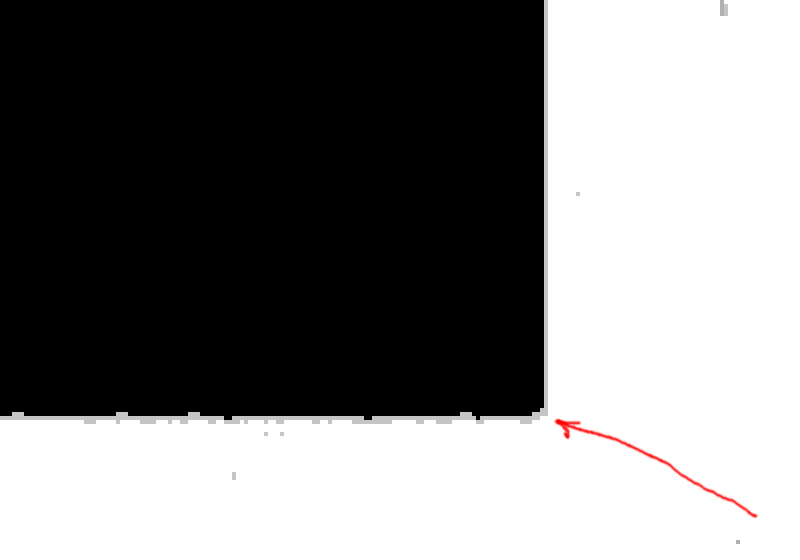
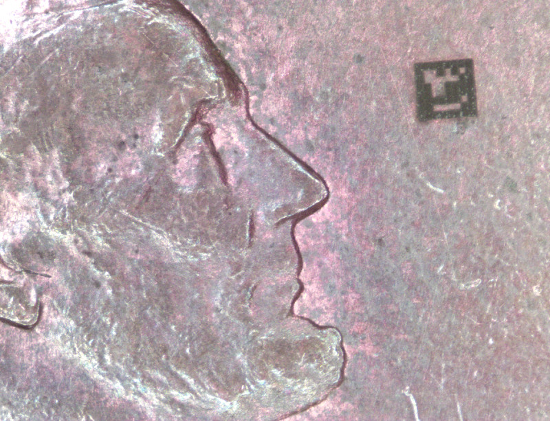
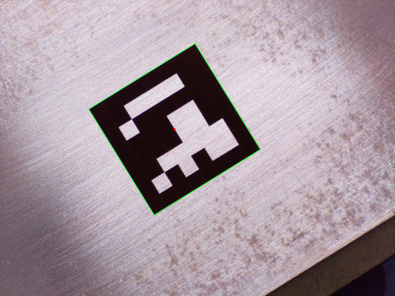
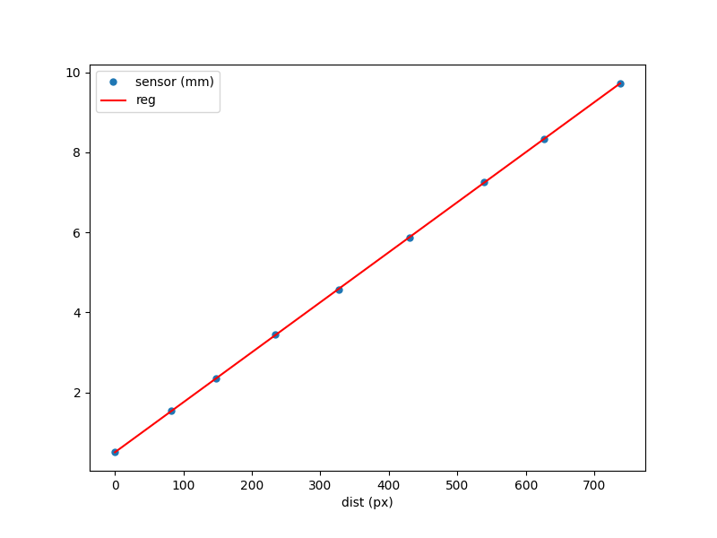
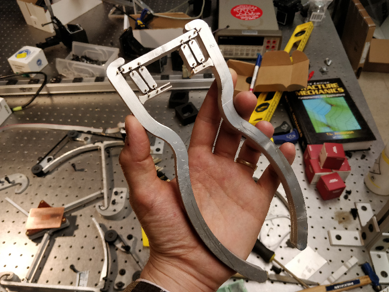
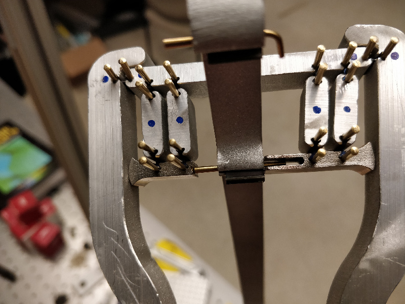

ArUco Markers
ArUco markers are 2D binary-encoded fiducial patterns designed to be quickly located by computer vision systems. ArUco marker patterns are defined by a binary dictionary in OpenCV, and the various library functions return pattern IDs and pose information from scanned images. The ArUco project, originally designed for augmented reality applications, comes from Rafael Munoz and Sergio Garrido:S. Garrido-Jurado, R. Munoz-Salinas, F. J. Madrid-Cuevas, and M. J. Marin-Jimenez. 2014. "Automatic generation and detection of highly reliable fiducial markers under occlusion". Pattern Recogn. 47, 6 (June 2014), 2280-2292. DOI=10.1016/j.patcog.2014.01.005I'm going to use these markers to precisely determine the stage location during movement so I can eliminate the remaining distortion I observed after calculating inverse kinematics. ArUco markers are arguably overkill for this application; they shine when used in multi-marker and 3D applications with 6-DOF pose estimation. But Alfonso and others from the CBA used them recently for a research project and gave me tips on getting started, so this seemed like a good direction.
First, I wrote a Python script in Jupyter Notebook to determine lens distortion based on a laser machined checkerboard pattern. To save space on the shared class repo, I didn't commit the dozen or so original ~10 MB calibration images which covered most of the camera's working area. Somewhat disappointingly (but perhaps for the better), the calibration only resulted in a ~1 pixel shift across a several millimeter image; see the gray line in this thresholded closeup stacked comparison:

Ah well. I guess the 50 mm telephoto lens I procured is better than expected. At least I have a solid OpenCV calibration pipeline set up; that may prove useful in the future.
Next, I wrote another Python script to generate an ArUco pattern in Oxford-type Gcode. During debugging, I reduced the square size to 100 microns to speed up script tests. Lincoln approves of the marker but reminds us to avoid defacing currency in the future (even pennies):

I engraved a larger ArUco marker on a piece of lapped copper-clad FR1, this time with 2 mm squares. I disassembled the 3-RRR CPM (breaking another flexure in the process) and installed a commercial micrometer-driven linear stage in its place, shimming the ArUco target to the same height as the camera distortion correction checkerboard. I bolted a right angle bracket to the stage to serve as a target, and positioned the laser displacement sensor to read the stage displacement:

Then I started collecting data, advancing the stage roughly 1 mm between shots and manually recording the displacement sensor reading each time. Since the sensor only measures out to 10 mm, I moved the target and rotated the stage several times to cover the whole image frame, including a diagonal run in the center. I captured 45 data points total, periodically adjusting a clip-on LED light to maximize contrast:
Initially, ArUco detection wasn't great:
I added thresholding to the OpenCV code prior to ArUco detection and accuracy improved dramatically:

Finally, I added displacement data to the script and compared laser displacement measurements to ArUco calculations, normalized to the first point in each setup. Here is the resulting plot from the first setup with a fitted line:

The line fit returns a slope of 12.5 um/pixel, which is line with my previous ImageJ calculation from a raw checkerboard image. The standard deviation of the error of each point for Setup 1 was 8.3 um; my guess is this could be improved with better sub-pixel detection, but it should be fine for my purposes as it represents error over the entire 10 mm range of the laser displacement sensor. I'll be correcting IK distortion at roughly this scale, meaning this error will only throw correction off by 0.1%. Data from all five setups is shown below; ideally, I should calculate all of these together so the error standard deviations represent the whole working area:
| setup | location | direction | slope (um/px) | stdev error (um) |
|---|---|---|---|---|
| 1 | top left | horizontal | 12.50 | 8.34 |
| 2 | bottom right | horizontal | 12.50 | 6.15 |
| 3 | bottom left | vertical | 12.52 | 6.95 |
| 4 | top right | vertical | 12.57 | 10.53 |
| 5 | center | diagonal | 12.49 | 7.48 |
Recursive Pinsetters
An irresistable tangent, using 10 pivots to apply parallel (but underconstrained) force to taper pins:

The brass pins aren't great. They bend easily during installation, and I noticed a few joints loosening up after prolonged use, suggesting they're soft enough to plastically deform under load. I found a source for 1" stainless 7/0 taper pins; I'll swap those in before trying to build further generations of pinsetters. Having said that, the tool does work!